Equações Diferenciais Lineares#
Forma geral da representação:#
- \(a_k\) e \(b_k\) são coeficientes constantes.#
- N (a maior derivada de y(t)) \(\rightarrow\) ordem do sistema.#
A solução consiste de duas partes:#
solução homogênea (resposta natural) \(\to y_h(t)\)
solução particular \(\to y_p(t)\)
Considerações#
Um sistema para a qual a entrada e a saída satisfazem uma equação linear de diferenças possui:#
- A saída para uma dada entrada não é unicamente especificada. Informações adicionais são necessárias;#
- A informação auxiliar consiste de \(N\) condições iniciais da saída;#
- Se \(N = 0\) nenhuma condição é necessária para o cálculo da saída.#
- Linearidade, invariância no tempo e causalidade do sistema não dependem das condições auxiliares.#
Equações Diferenciais Lineares#
Solução#
A solução da equação diferencial necessita de um conjunto de N condições auxiliares:
Essas condições resumem as condições dos dispositivos que armazenam energia (tensões nos capacitores, correntes nos indutores, \(\dots\))
Equações Diferenciais Lineares#
Solução#
A solução da equação diferencial necessita de um conjunto de \(N\) condições auxiliares: Um sistema linear é causal se a condição inicial de repouso for satisfeita:
Solução homogênea ou resposta natural#
\(y_h(t)\) \(\rightarrow\) a resposta natural é a saída do sistema quando a entrada é nula:
A solução apresenta a seguinte forma:
Em que os coeficientes \(\alpha_k\) são as raízes da seguinte equação característica:
\(\sum_{k=0}^{N}a_k s^k = a_0+a_1s+\ldots+a_Ns^N\)
Solução homogênea ou resposta natual#
Com relação ao tipo de raízes, tem-se os seguintes tipos de saída:#
- Reais \(\rightarrow\) Exponenciais Reais#
- Imaginárias \(\rightarrow\) Senóides#
- Complexas \(\rightarrow\) Senóides Amortecidas#
Se uma das raízes tiver multiplicidade M, são incluídos M termos:#
Solução particular#
\(y_p(t)\) \(\rightarrow\) a solução particular é obtida através da resposta forçada na forma \(e^{st}\).#
Supõe-se que a saída tenha a mesma forma geral de entrada.#
Estruturas para sistemas contínuos no tempo#
Conceitos básicos#
Os sistemas descritos por equações diferenciais com coeficientes constantes podem ser representados por um diagrama de blocos de operações elementares. Três operações básica são utilizadas:
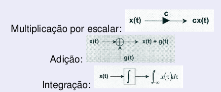
Estruturas para sistemas contínuos no tempo#
Considere o sistema descrito pela equação diferencial:#
\begin{equation} \sum_{k=0}^{N}a_k\frac{d^k}{dt^k}y(t) = \sum_{k=0}^{M}b_k\frac{d^k}{dt^k}x(t) \end{equation}
Considere a seguinte operação de integração recursiva: \(g^{(n)}(t) = \int_{-\infty}^{t}g^{(n-1)}(\tau)d\tau\)
\(g^{(n)}(t) \rightarrow\) a n-ésima integral de \(g(t)\)
\(g^{(0)}(t) = g(t)\)
Admitindo \(N \geq M\)
Estruturas para sistemas contínuos no tempo#
Exemplo#
Escrevendo a equação acima através de uma soma de integrais:
De outro modo:
Estruturas para sistemas contínuos no tempo#
Forma direta#
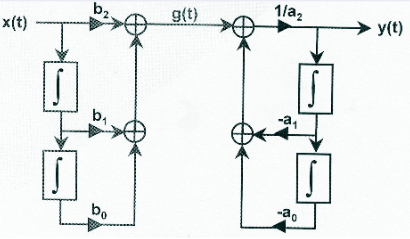
Estruturas para sistemas contínuos no tempo#
Tem-se dois sistemas LTI em cascata. Pode-se trocar a ordem de execução (propriedades comutativa) trocando a ordem de operação dos sistemas:
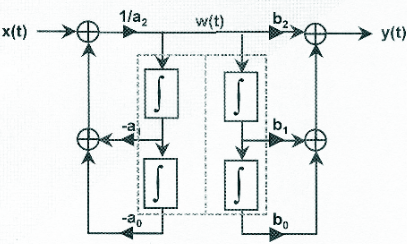
Estruturas para sistemas contínuos no tempo#
Forma direta modificada#
\(w(t)\) alimenta os dois conjuntos de integradores idênticos. Portanto, eles podem ser agrupados em um só formando então uma nova forma de diagrama de blocos.
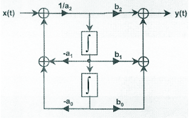
\(\Rightarrow\) Vantagem: utiliza um número menor de integradores em relação à primeira forma direta.
Estruturas para sistemas contínuos no tempo#
Forma canônica#
Generalizando a forma direta modificada:
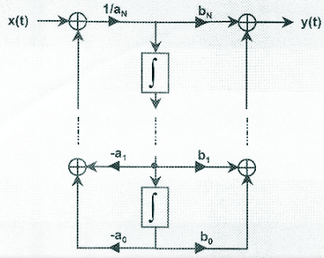
Exercício#
Fazer os exercícios 27 e 28 da lista.#
Como ficaria a implementação usando as estruturas com integração e diferenciação?#
Equações de Recorrência para sistemas em tempo discreto#
Equações de Recorrência Lineares#
Justicativa#
Uma importante classe de sistemas lineares e invariantes no tempo consiste na seguinte equação:
Exemplo:
Em diagrama de blocos#
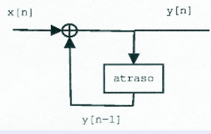
Exemplo para N = 0#
Substituindo \(x[n]\) por \(\delta[n]\)
Estruturas para sistemas discretos no tempo#
Definição#
Sistemas LTI com função racional possui a propriedade que a sua sequência de entrada e saída satisfaz uma equação de diferençaas finitas com coeficientes constante. A função do sistema é a TZ da resposta impulsiva. Veja a seguir a representação das operações elementares em sistemas discretos:
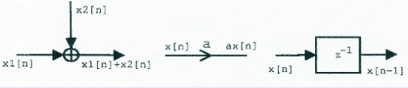
Estruturas para sistemas discretos no tempo#
Exemplo#
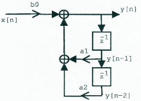
Forma direta#
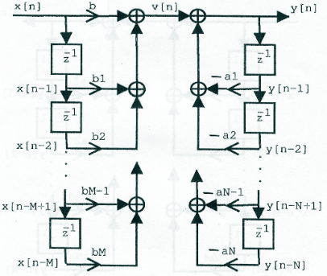
Eq. recorrência#
Sistema discreto#
Forma direta modificada#
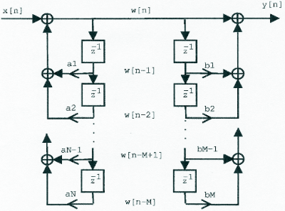
Estruturas para sistemas discretos no tempo#
Considerando#
\(v[n] = \sum_{k=0}^{M} b_kx[n-k]\). Esse gráfico pode ser interpretado como a cascata de 2 sistemas e desta forma a ordem da soma pode ser alterada. Caso \(N \neq M\) existem alguns coeficientes com zero.
Estruturas para sistemas discretos no tempo#
Forma canônica#
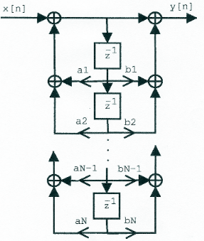